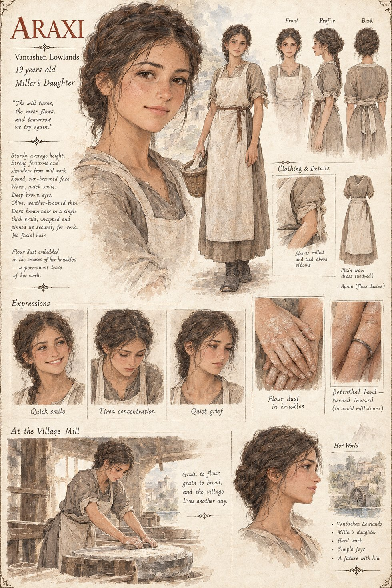

Araxi
Miller's Daughter · Vantashen Lowlands · 19 years old
A miller's daughter in the Vantashen lowlands, sturdy and sun-browned from mill work, engaged to Hovan the night before he's mustered south with the levy. She wears the betrothal band turned inward, so it won't catch on the millstones, and keeps working the mill the whole time he's gone — grain to flour, flour to bread, and the village living another day, whether or not he ever comes home to see it.
“The mill turns, the river flows, and tomorrow we try again.”
Appears in The Stolen Prince War